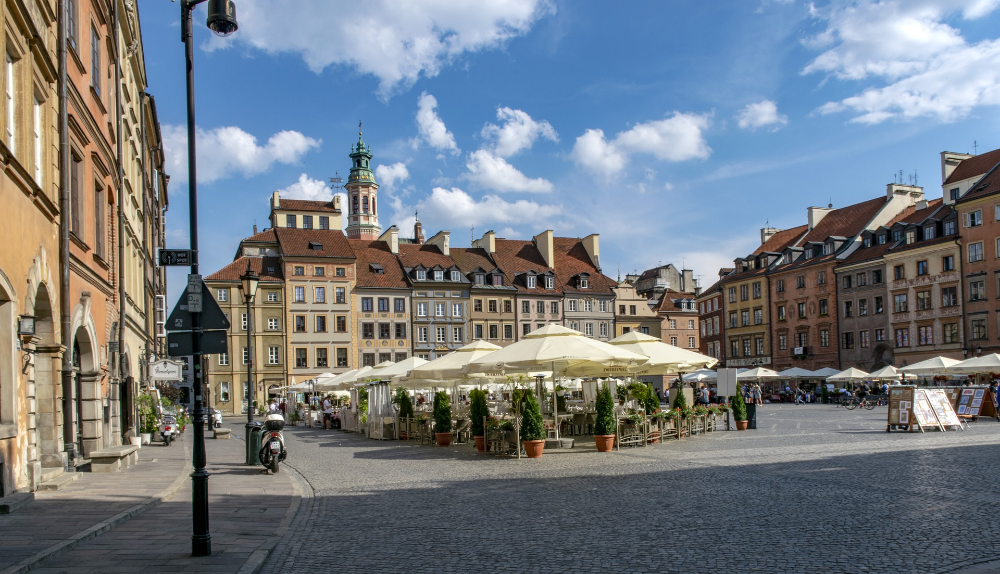
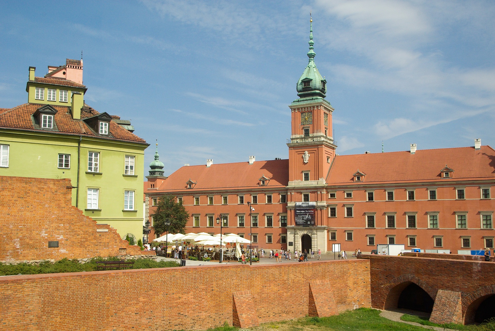
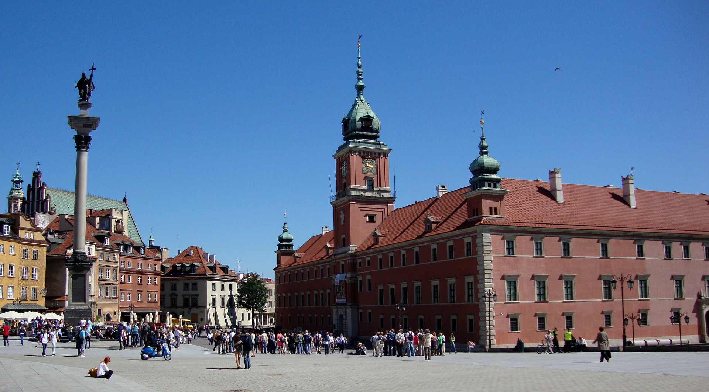
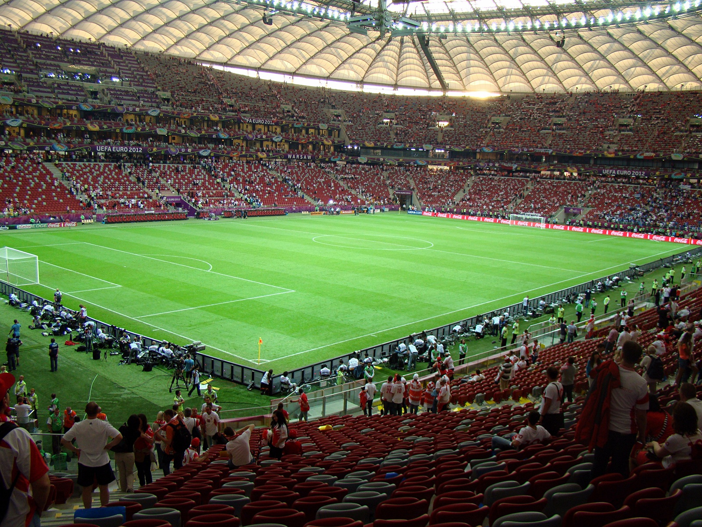
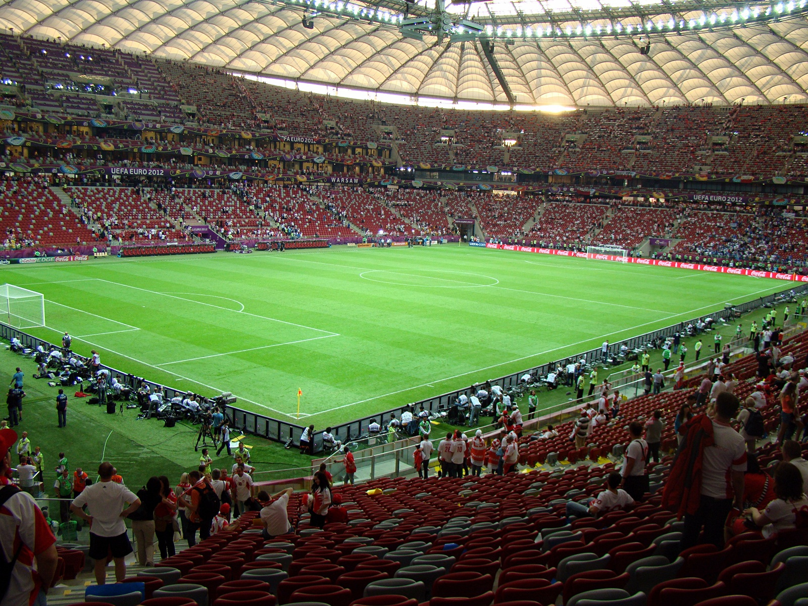

a
Warszawa jest stolicą Polski i miastem przepełnionym atrakcjami
Nie ma lepszego miejsca, by rozpocząć poznawanie Warszawy niż jej 700-letnia Starówka, która po II wojnie światowej została zrekonstruowana (m.in na podstawie obrazów Canaletta) tak szczegółowo, że wpisano ją na listę światowego dziedzictwa UNESCO.
Dziś Stare Miasto zachwyca swoją kameralnością, unikalną atmosferą i detalami architektonicznymi.
Centralnym miejscem Starówki jest Rynek.
Pomnik Warszawskiej Syrenki jest symbolem miasta.
Warszawa od wieków była siedzibą polskich władców. Zamek Królewski, siedziba polskich władców od XVI wieku, gdzie zobaczyć można insygnia i trony królewskie czy obrazy słynnych malarzy, m.in. Rembrandta, Canaletta i Matejki.
W jego sąsiedztwie stoi Kolumna Zygmunta będąca najsłynniejszym pomnikiem w Polsce.
W samym centrum Warszawy stoi socrealistyczny Pałac Kultury i Nauki będący współczesną ikoną miasta. W gmachu widocznym niemal z każdego zakątka stolicy funkcjonują teatry, kino, muzea, kawiarnie i główny Punkt Informacji Turystycznej.
Z tarasu widokowego na XXX. piętrze można zobaczyć panoramę Warszawy, w tym spektakularne drapacze chmur i oba brzegi Wisły.
PGE Narodowy w Warszawie to miejsce najlepszych wydarzeń sportowych, rozrywkowych i biznesowych w Polsce.
 

Autorstwa Bernenka - Flickr: After opening match, CC BY 2.0,
https://commons.wikimedia.org/w/index.php?curid=19936551
Centrum Nauki Kopernik w Warszawie
– Centrum nauki znajdujące się przy ul. Wybrzeże Kościuszkowskie 20 w Warszawie, którego celem jest rozwijanie nauki, współpraca z naukowcami i nauczycielami, a według misji instytucji także: inspirowanie do obserwacji, doświadczania, zadawania pytań i poszukiwania odpowiedzi. Centrum jest otwarte dla publiczności od 5 listopada 2010 roku.
Autorstwa Adrian Grycuk - Praca własna, CC BY-SA 3.0 pl
Autorstwa Piotr Frydecki - Praca własna, CC BY-SA 3.0,
https://commons.wikimedia.org/w/index.php?curid=77322879
https://commons.wikimedia.org/w/index.php?curid=19174700
Łazienki Królewskie
-Zespół pałacowo-ogrodowy w Warszawie założony w XVIII wieku przez Stanisława Augusta Poniatowskiego.
-Nazwa pochodzi od barokowego pawilonu Łaźni, wzniesionego w latach 80. XVII wieku przez Stanisława Herakliusza Lubomirskiego i przebudowanego przez Stanisława Augusta Poniatowskiego na pałac Na Wyspie[2]. Oprócz budynków, pawilonów oraz wolnostojących rzeźb znajdują się tam cztery ogrody: Królewski, Romantyczny, Modernistyczny oraz Chiński.

Autorstwa Chichebombon - Praca własna, CC BY-SA 4.0
Autorstwa Adrian Grycuk - Praca własna, CC BY-SA 3.0 pl
https://commons.wikimedia.org/w/index.php?curid=82629772
https://commons.wikimedia.org/w/index.php?curid=61959685
Pomnik Fryderyka Chopina
Autorstwa © Marek i Ewa Wojciechowscy / Trips over Poland, CC BY-SA 3.0,
https://commons.wikimedia.org/w/index.php?curid=458769